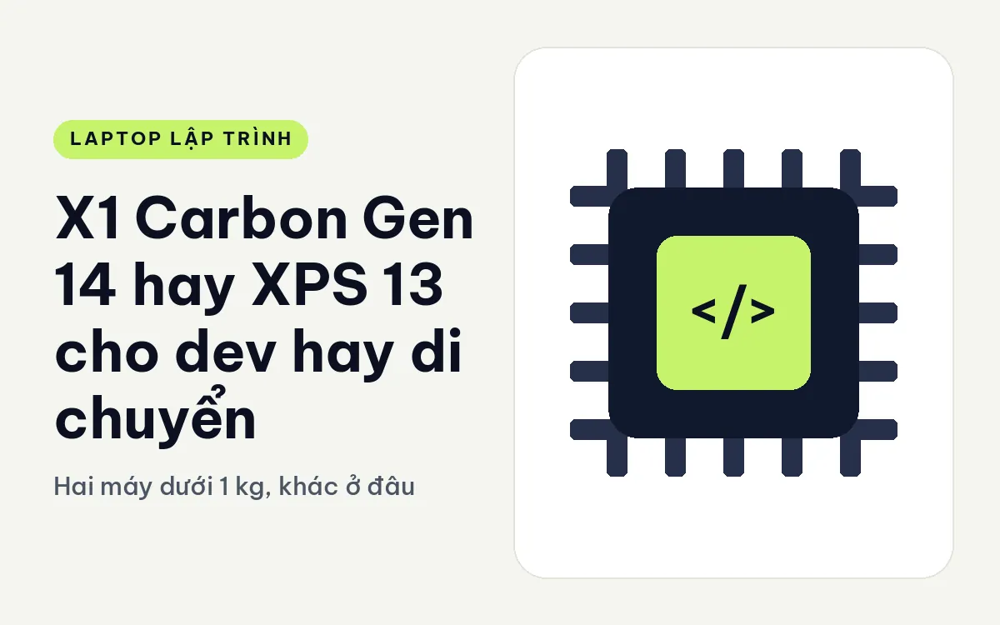
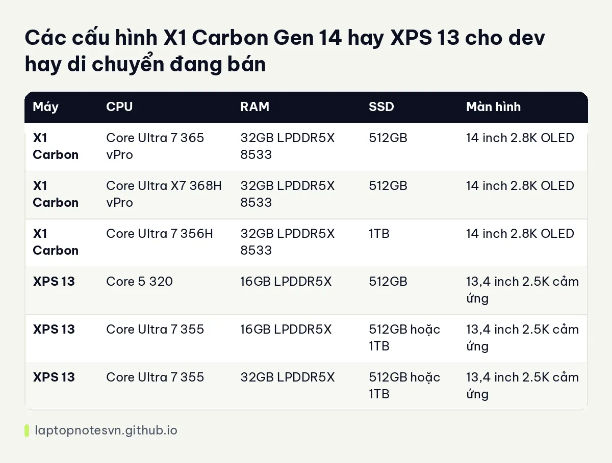

X1 Carbon Gen 14 hay XPS 13 cho dev hay di chuyển - Hai máy dưới 1 kg, khác ở đâu

Bạn ngồi quán cà phê ba buổi một tuần, thỉnh thoảng lên công ty khách, và cái ba lô đã đủ nặng vì sách vở, sạc, chuột. Với người như vậy, một cái tên hay được cân nhắc là ThinkPad X1 Carbon Gen 14 Aura Edition.
Cái tên còn lại là Dell XPS 13 DX13260. Cả hai đều nằm quanh mức 1 kg, nhưng tính cách rất khác nhau, và chọn sai sẽ thấy ngay vào tuần thứ hai.
Thiết kế X1 Carbon Gen 14 đặt cạnh XPS 13
XPS 13 dày 12,7 mm, nặng khoảng 0,9 kg, màn 13,4 inch. X1 Carbon Gen 14 có trọng lượng khởi điểm dưới 1 kg, màn 14 inch. Vậy X1 Carbon lớn hơn một cỡ màn nhưng không nặng hơn bao nhiêu, đó là điểm đáng chú ý nếu bạn từng quen màn 13 inch và thấy chật khi mở hai cửa sổ code song song.
Phần cổng cho thấy hai hướng thiết kế. X1 Carbon có 3 cổng Thunderbolt 4, đủ để sạc, cắm màn hình và ổ ngoài cùng lúc mà không cần hub. XPS 13 mỏng đến mức Dell bỏ bớt cổng. Bản Core 5 320 chỉ có 2 cổng USB-C thông thường, còn bản Core Ultra 7 355 nâng lên 2 cổng Thunderbolt 4. Nếu bạn hay cắm dock, nên chọn bản Ultra 7 để có Thunderbolt.
Bàn phím là chỗ dev nên ngồi thử. ThinkPad nổi tiếng với bàn phím phím sâu, gõ nhiều giờ ít mỏi. XPS 13 mỏng nên phím nông hơn, hợp người thích cảm giác gõ nhẹ. Hai kiểu phím không có đúng sai, chỉ có hợp tay hay không.
Thông số các phiên bản còn hàng
X1 Carbon có ba bản, đều 32GB RAM. XPS 13 có sáu bản, chia theo CPU, RAM 16GB hoặc 32GB và SSD 512GB hoặc 1TB.

| Máy | CPU | RAM | SSD | Màn hình |
|---|---|---|---|---|
| X1 Carbon | Core Ultra 7 365 vPro | 32GB LPDDR5X 8533 | 512GB | 14 inch 2.8K OLED |
| X1 Carbon | Core Ultra X7 368H vPro | 32GB LPDDR5X 8533 | 512GB | 14 inch 2.8K OLED |
| X1 Carbon | Core Ultra 7 356H | 32GB LPDDR5X 8533 | 1TB | 14 inch 2.8K OLED |
| XPS 13 | Core 5 320 | 16GB LPDDR5X | 512GB | 13,4 inch 2.5K cảm ứng |
| XPS 13 | Core Ultra 7 355 | 16GB LPDDR5X | 512GB hoặc 1TB | 13,4 inch 2.5K cảm ứng |
| XPS 13 | Core Ultra 7 355 | 32GB LPDDR5X | 512GB hoặc 1TB | 13,4 inch 2.5K cảm ứng |
Hai bản X1 Carbon dùng chip dòng H nghiêng về sức mạnh, còn bản Ultra 7 365 thiên về tiết kiệm điện. XPS 13 có Core Ultra 7 355 ở bản cao và Core 5 320 ở bản thấp, sự khác biệt này đáng kể khi bạn build thường xuyên.
Về RAM, cả hai đều hàn trên bo mạch. Mô tả của cả hai máy ghi rõ không nâng cấp được sau khi mua. Điều này nghĩa là bạn phải chốt dung lượng ngay từ đầu. Với dev, khuyến nghị an toàn là 32GB, nhất là khi bạn dùng Docker hoặc IDE nặng như Android Studio hay IntelliJ. Bạn có thể đọc cách tính ở trang dev cần bao nhiêu RAM.
Màn hình và thời lượng pin
X1 Carbon dùng tấm OLED 2.8K (2880 x 1800), tần số quét 30 đến 120Hz, phủ 100% DCI-P3, không cảm ứng. XPS 13 dùng tấm IPS 2.5K (2560 x 1600), 30 đến 120Hz, cảm ứng, cũng phủ 100% DCI-P3 và độ sáng 500 nits.
OLED có màu đen sâu và chữ đẹp, nhưng nếu bạn để giao diện sáng và mở văn bản nhiều giờ, người dễ mỏi mắt nên thử trước. IPS của XPS sáng hơn một chút, dễ dùng ngoài trời. Pin XPS 13 là 52Wh, mô tả ghi xem video lên đến khoảng 17 giờ theo công bố của hãng. Dữ liệu X1 Carbon không ghi dung lượng pin nên bài này không so số liệu đó. Bạn nên coi con số của hãng là mức tham khảo, gõ code và chạy build sẽ hao pin nhanh hơn xem video.
Đặt hai máy vào việc code thật
- Web, mobile cross-platform, script: cả hai đều hợp, XPS 13 gọn hơn trong balo, X1 Carbon có màn 14 inch rộng hơn.
- Docker và VM: chọn bản 32GB của máy nào cũng được. XPS 13 16GB sẽ chật khi bật nhiều container cùng lúc.
- Build native, Rust, C++: X1 Carbon bản chip dòng H có lợi thế cho biên dịch song song. Cả hai không có GPU rời, nên huấn luyện mô hình hoặc CUDA không phải sở trường.
- Gõ code cả ngày trên máy này: bàn phím và nút TrackPoint giữa phím của ThinkPad dễ dùng khi tay không rời hàng phím chính.
Quyết định cuối cho người code
Chọn X1 Carbon Gen 14 nếu bạn cần màn 14 inch, nhiều cổng Thunderbolt, bàn phím sâu và muốn có bản chip dòng H. Mô tả bản này cũng đi kèm vPro, tiện nếu công ty bạn quản lý máy từ xa. Cách dùng thực tế được viết ở trang X1 Carbon Gen 14 cho lập trình.
Chọn XPS 13 nếu ưu tiên số một là gọn và nhẹ, màn cảm ứng nét, và bạn chấp nhận ít cổng hơn. Riêng với XPS 13, hãy bỏ ngân sách thêm cho bản 32GB nếu có dùng container. Một chiếc máy 0,9 kg mà phải đóng ứng dụng liên tục vì thiếu RAM thì cái nhẹ cũng mất đi một nửa giá trị. Trang XPS 13 cho lập trình có thêm phần so sánh các bản của riêng máy này.
Đăng ngày 09/11/2026